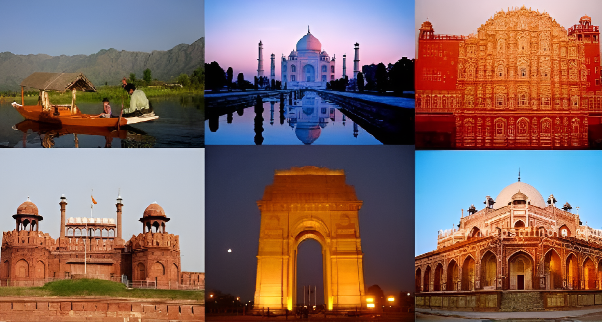

Bhangra: The Vibrant Folk Dance of Punjab
hangra, originating from Punjab's harvest festivals, embodies the gratitude of the agricultural community, evolving into a vital part of Punjabi culture. Characterized by energetic movements and rhythmic beats, traditional Bhangra features live music with instruments like the dhol and tumbi. Colorful attire adds vibrancy to performances, reflecting Punjab's rich culture. While primarily associated with Punjab, Bhangra's global popularity has led to modern adaptations blending traditional elements with contemporary styles. Beyond entertainment, Bhangra celebrates Punjab's agricultural heritage and fosters unity among communities
Durga Puja
Durga Puja, a vibrant Hindu festival, celebrates the victory of Goddess Durga over the demon Mahishasura. Held primarily in West Bengal, India, and among Bengali communities worldwide, it is a grand affair steeped in tradition and fervor. Elaborate pandals (temporary structures) are erected to house beautifully crafted idols of Goddess Durga and her children, worshipped with great devotion. The festival spans over nine days, known as Navratri, with each day dedicated to a different form of the Goddess. Cultural programs, feasting, and vibrant processions fill the streets, creating an atmosphere of joy and camaraderie. Durga Puja not only honors the divine feminine but also symbolizes the triumph of good over evil, unity, and the spirit of community.
Folk dance of Rajasthani dance-Ghoomar
Rajasthan's cultural tapestry is adorned with the vibrant folk dance forms, among which Ghoomar stands out. Originating from the Bhil tribes, it's a graceful expression performed by women during festivals. Characterized by circular movements and synchronized footwork, dancers don colorful ghagras and odhnis, creating a mesmerizing spectacle. Ghoomar not only entertains but also preserves Rajasthan's rich heritage, serving as a proud symbol of the state's traditions. One of the striking features of Ghoomar is the elaborate traditional attire worn by the performers.
Embarking on a Journey Through Time: Unveiling the Exquisite Tapestry of India's Cultural and Heritage Marvels
Unveiling the Timeless Tapestry: India's Cultural Kaleidoscope

Chhath Puja, an ancient Hindu festival, venerates the Sun God, Surya, and is observed primarily in Bihar, Jharkhand, Uttar Pradesh, and Nepal's Terai region. Celebrated over four days in Kartik (October-November), it involves rigorous fasting, rituals, and offerings to the Sun. Devotees, mainly women, undertake a holy dip, fast, and perform prayers at riverbanks during sunrise and sunset. The festival fosters a deep connection with nature, promoting environmental consciousness and communal harmony. Chhath Puja's historical and mythological significance, rooted in ancient scriptures and epics like the Rigveda and Mahabharata, underscores its cultural importance.
Bharatanatyam:Magical Dance from Tamil nadu
Bharatanatyam, a classical Indian dance form originating from the temples of Tamil Nadu, is a captivating expression of devotion, mythology, and artistic excellence. With roots dating back over two millennia, Bharatanatyam has evolved into one of India's most revered classical dance forms, characterized by intricate footwork, graceful movements, and emotive storytelling. Performances often depict tales from Hindu mythology, exploring themes of love, devotion, and spirituality. The dance's repertoire includes a rich array of adavus (basic steps), mudras (hand gestures), and abhinaya (expressive storytelling), meticulously choreographed to classical Carnatic musicBharatanatyam's cultural significance extends beyond its aesthetic appeal, serving as a vehicle for preserving ancient traditions and spiritual values. Through its performances, Bharatanatyam not only entertains but also educates and inspires.
Treasures of Tradition: India's Heritage in Focus
From the majestic monuments of ancient civilizations to the vibrant festivals and classical arts passed down through generations, India's heritage reflects a journey through time. Through this lens, the intricacies of India's cultural mosaic come to life,
Unveiling India: A Heritage Odyssey